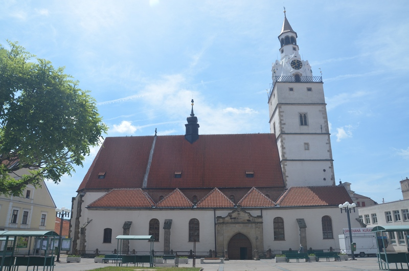
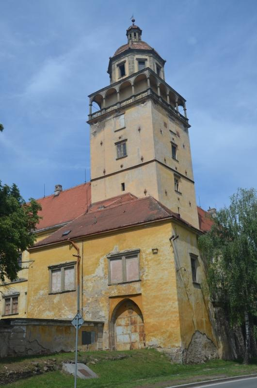
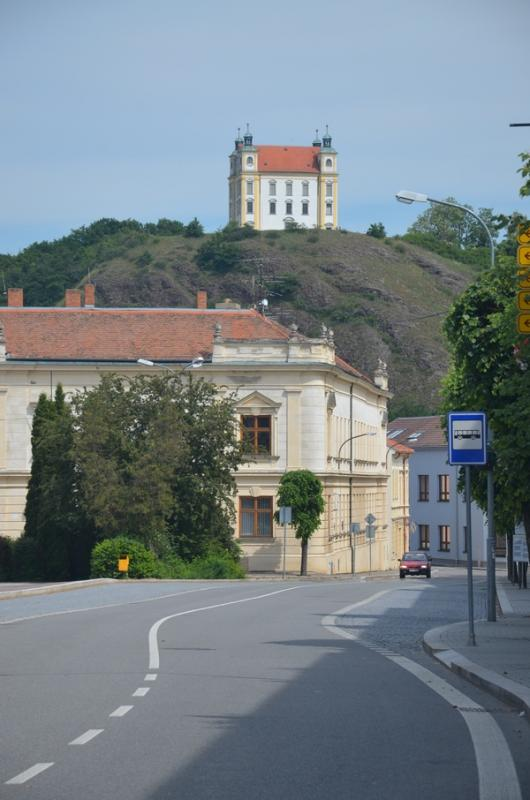

Dlouho tu nebyl žádný tip na nějaký výlet po Čechách, a tak vás dnes vezmu s sebou do Moravského Krumlova, kam jsme se vydali poslední květnový víkend, zlákáni hezkým počasím.
Cestou jsme se zastavili ještě v Ivančicích, malebném městečku, které proslavili jeho významní rodáci Vladimír Menšík a Alfons Mucha. Zdejší muzeum, kde bychom se o nich dozvěděli víc, však bylo v neděli dopoledne zavřené a navíc jsme v okolí náměstí nenašli žádnou slušně vypadající restauraci, kde bychom se mohli naobědvat, a tak jsme si jen prošli náměstíčko, podívali se do kostela Nanebevzetí panny Marie a na židovský hřbitov (prý jeden z nejstarších v republice), kde jsme si odlovili kešku a pokračovali směrem do Moravského Krumlova.

Ivančice
Stejně jako známější Český Krumlov, i Moravský Krumlov téměř ze všech stran obtéká řeka - Rokytná. Historické centrum města bylo bohužel na konci druhé světové války fatálně vybombardováno. Jednou z památek, která bombardování jen zázrakem přežila, je zdejší zámek. Bohužel i ten už dnes zoufale volá po opravě. Pokud vás k prohlídce nenaláká zámek, můžete alespoň zavítat do přilehlého zámeckého parku, který je příjemným místem k poobědovému odpočinku.

Zámek
Dominantou městečka je kaple svatého Floriána, který je patronem Moravského Krumlova. Kaple je postavena z tesaného kamene, má tři vchody a čtyři vížky v rozích. Pro veřejnost se otevírá pouze několikrát ročně - my měli to štěstí, že se zde zrovna konala nějaká slavnost a mohli jsme se podívat dovnitř i vyslechnout krátkou přednášku o její historii.

Floriánek
V okolí Moravského Krumlova je spousta možností pro pěší výlety. Můžete se vydat naučnou stezkou, která vás zavede do Národní přírodní rezervace Krumlovsko-rokytenské slepence. My jsme ale bohužel už tolik času neměli, a tak jsme u Floriánka náš výlet zakončili.
Máte nějaký tip na další zajímavé místo k výletování? Léto bude ještě dlouhé :-) …